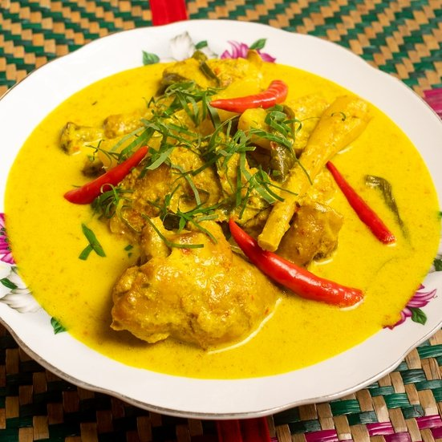

Ayam Masak Lemak Cili Api
Ayam Masak Lemak Cili Api ialah salah satu makanan tradisi orang.
Resepi ini juga merupakan salah satu resepi turun temurun dan disukai ramai dan enak dimakan bersama telur dadar.
Ramuan Masak
- Ayam Isi Dada 500g
- 2 Ulas serai dititik
- 3-4 biji kentang
- 10 biji Cili merah
- 2 bji Bawang Holland
- 1/2 Sudu Garam
- Minyak Masak 500g
- 1/2 Sudu Ajinomoto
- 3 kerat Kunyit hidup
- 1 cawan santan pekat
- 1 keping asam keping
- 500g air
Cara-cara Memasak
Penyediaan Barang Basah
- Potong ayam menjadi kiub
- Kisar bawang sehingga halus
- Kisar Kunyit hidup sehingga halus
- Kupas dan potong dadu kentang
- Potong Bawang Holland
Penyediaan Gorengan
- Panaskan minyak masak selama lebih kurang 15 minit
- Tuang bawang yang telah dikisar halus masak sehingga pecah minyak
- Tuang kunyit yang telah dikisar halus masak sehingga pecah minyak
- Tuang 500g air kedalam kuali beserta secawan santan pekat yang dikacau
- Tunggu sehingga mendidih dan masukkan ayam yang telah diptotong kiub
- Akhirnya masuk kan segala bahan perasa, ajonomoto, garam dan asam keping
- Ayam Masak Lemak Cili Api siap dihidang